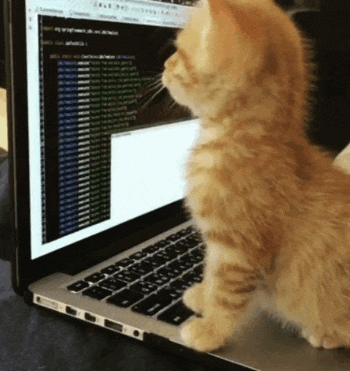

Фритрек и нулевой спринт: Подготовка к работе

Это было самое начало пути. На этом этапе важно было проникнуться основами и настроиться на учёбу. И, возможно, подумать, как новые знания могут повлиять на ваше будущее.
Долгое время создание сайтов казалось мне какой-то магией для избранных. Но именно на нулевом спринте пришло осознание: это просто навык, который можно освоить. Я до сих пор помню тот трепет, когда мой первый текст появился на экране браузера. Это был первый шаг к совершенно новой профессии.